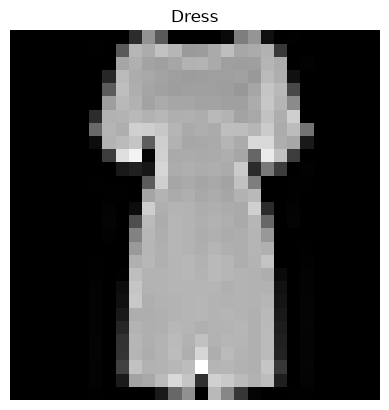
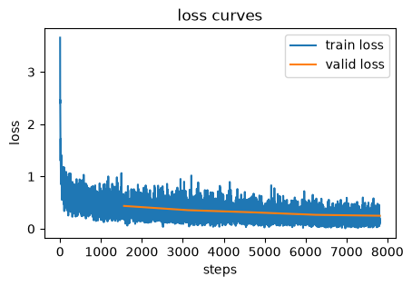

def chunks(x, sz):
for i in range(0, len(x), sz): yield x[i:i+sz]
def show_data(fashion_image, label=None, is_1d=False):
if isinstance(fashion_image, tuple):
fig, ax = plt.subplots(1, len(fashion_image), figsize=(9, 3))
for i, x in enumerate(fashion_image):
ax[i].imshow(x)
ax[i].axis('off');
plt.show()
else:
mpl.rcParams['image.cmap'] = 'gray'
if label is not None:
plt.title(f"{idx_to_class[label.item()]}")
if is_1d==True:
plt.imshow(list(chunks(fashion_image, 28)));
else:
plt.imshow(fashion_image);
plt.axis('off');core
A transparent, concise machine learning framework in JAX inspired by
miniai from fastai/course22p2 and optimized for efficient TPU usage.
Visualization Functions
Load Fashion-MNIST
train_data = datasets.FashionMNIST(root="./data", train=True, download=True, transform=transforms.ToTensor())
test_data = datasets.FashionMNIST(root="./data", train=False, download=True, transform=transforms.ToTensor())
x_train_all = train_data.data[:, None, :, :]/255
y_train_all = train_data.targets
rand_idx = torch.randperm(x_train_all.shape[0])
x_train = x_train_all[rand_idx[:50_000]]
train_mean = x_train.mean()
train_std = x_train.std()
x_train = jnp.array((x_train - train_mean) / train_std)
y_train = jnp.array(y_train_all[rand_idx[:50_000]])
x_valid = jnp.array((x_train_all[rand_idx[50_000:]] - train_mean) / train_std)
y_valid = jnp.array(y_train_all[rand_idx[50_000:]])
x_test = jnp.array((test_data.data[:, None, :, :]/255 - train_mean) / train_std)
y_test = jnp.array(test_data.targets)
x_train.shape, y_train.shape, x_valid.shape, y_valid.shape, x_test.shape, y_test.shape,((50000, 1, 28, 28),
(50000,),
(10000, 1, 28, 28),
(10000,),
(10000, 1, 28, 28),
(10000,))idx_to_class = {value: key for key, value in train_data.class_to_idx.items()}
num_classes = len(idx_to_class)
idx_to_class, num_classes({0: 'T-shirt/top',
1: 'Trouser',
2: 'Pullover',
3: 'Dress',
4: 'Coat',
5: 'Sandal',
6: 'Shirt',
7: 'Sneaker',
8: 'Bag',
9: 'Ankle boot'},
10)DataLoaders
Dataset
def Dataset(
x, y
):Combines features and lables in a dataset.
train_ds = Dataset(x_train, y_train)
valid_ds = Dataset(x_valid, y_valid)
test_ds = Dataset(x_test, y_test)show_data(x_train[0].squeeze(), y_train[0])
DataLoader
def DataLoader(
dataset, batch_size:int=32, drop_last:bool=False, shuffle:bool=True,
random_key:PRNGKeyArray=Array((), dtype=key<fry>) overlaying:
[ 0 42]
):Returns iterable batches from a dataset
test_train_ds = Dataset(x_train[:-1], y_train[:-1])test_dataloader = DataLoader(test_train_ds, batch_size = 2)
test_generator = iter(test_dataloader)
next(test_generator)(Array([[[[-0.8108199, -0.8108199, -0.8108199, ..., -0.8108199,
-0.8108199, -0.8108199],
[-0.8108199, -0.8108199, -0.8108199, ..., -0.8108199,
-0.8108199, -0.8108199],
[-0.8108199, -0.8108199, -0.8108199, ..., -0.8108199,
-0.8108199, -0.8108199],
...,
[-0.8108199, -0.8108199, -0.8108199, ..., -0.8108199,
-0.8108199, -0.8108199],
[-0.8108199, -0.8108199, -0.8108199, ..., -0.8108199,
-0.8108199, -0.8108199],
[-0.8108199, -0.8108199, -0.8108199, ..., -0.8108199,
-0.8108199, -0.8108199]]],
[[[-0.8108199, -0.8108199, -0.8108199, ..., -0.8108199,
-0.8108199, -0.8108199],
[-0.8108199, -0.8108199, -0.8108199, ..., -0.8108199,
-0.8108199, -0.8108199],
[-0.8108199, -0.8108199, -0.8108199, ..., -0.8108199,
-0.8108199, -0.8108199],
...,
[-0.8108199, -0.8108199, -0.8108199, ..., -0.8108199,
-0.8108199, -0.8108199],
[-0.8108199, -0.8108199, -0.8108199, ..., -0.8108199,
-0.8108199, -0.8108199],
[-0.8108199, -0.8108199, -0.8108199, ..., -0.8108199,
-0.8108199, -0.8108199]]]], dtype=float32),
Array([7, 0], dtype=int32))len(test_dataloader)25000test_dataloader = DataLoader(test_train_ds, batch_size = 2, drop_last=True)
test_generator = iter(test_dataloader)
next(test_generator)(Array([[[[-0.8108199, -0.8108199, -0.8108199, ..., -0.8108199,
-0.8108199, -0.8108199],
[-0.8108199, -0.8108199, -0.8108199, ..., -0.8108199,
-0.8108199, -0.8108199],
[-0.8108199, -0.8108199, -0.8108199, ..., -0.8108199,
-0.8108199, -0.8108199],
...,
[-0.8108199, -0.8108199, -0.8108199, ..., -0.8108199,
-0.8108199, -0.8108199],
[-0.8108199, -0.8108199, -0.8108199, ..., -0.8108199,
-0.8108199, -0.8108199],
[-0.8108199, -0.8108199, -0.8108199, ..., -0.8108199,
-0.8108199, -0.8108199]]],
[[[-0.8108199, -0.8108199, -0.8108199, ..., -0.8108199,
-0.8108199, -0.8108199],
[-0.8108199, -0.8108199, -0.8108199, ..., -0.8108199,
-0.8108199, -0.8108199],
[-0.8108199, -0.8108199, -0.8108199, ..., -0.8108199,
-0.8108199, -0.8108199],
...,
[-0.8108199, -0.8108199, -0.8108199, ..., -0.8108199,
-0.8108199, -0.8108199],
[-0.8108199, -0.8108199, -0.8108199, ..., -0.8108199,
-0.8108199, -0.8108199],
[-0.8108199, -0.8108199, -0.8108199, ..., -0.8108199,
-0.8108199, -0.8108199]]]], dtype=float32),
Array([7, 0], dtype=int32))len(test_dataloader)24999bs = 32
train_dl = DataLoader(train_ds, batch_size=bs, shuffle=True)
valid_dl = DataLoader(valid_ds, batch_size=bs, shuffle=True)
test_dl = DataLoader(test_ds, batch_size=bs, shuffle=False)DataLoaders
def DataLoaders(
*dls
):Combines training and validation data in a DataLoaders object that can be passed to a learner.
dls = DataLoaders(train_dl, valid_dl)
dls.train, dls.valid(<__main__.DataLoader>,
<__main__.DataLoader>)one_batch = next(iter(dls.train))[0]
one_batch.shape(32, 1, 28, 28)Learner and Callbacks
CancelEpochException
def CancelEpochException(
*args, **kwargs
):Common base class for all non-exit exceptions.
CancelBatchException
def CancelBatchException(
*args, **kwargs
):Common base class for all non-exit exceptions.
CancelFitException
def CancelFitException(
*args, **kwargs
):Common base class for all non-exit exceptions.
with_cbs
def with_cbs(
nm
):Initialize self. See help(type(self)) for accurate signature.
run_cbs
def run_cbs(
cbs, method_nm, learn:NoneType=None
):Call self as a function.
Learner
def Learner(
model, params, dls:tuple=(0,), loss_func:function=softmax_cross_entropy_with_integer_labels, lr:float=0.001,
cbs:NoneType=None, opt:function=sgd
):Initialize self. See help(type(self)) for accurate signature.
Callback
def Callback(
*args, **kwargs
):Initialize self. See help(type(self)) for accurate signature.
DeviceParallelCB
def DeviceParallelCB(
preload_data:bool=False
):Initialize self. See help(type(self)) for accurate signature.
accuracy
def accuracy(
preds, targs
):Call self as a function.
MetricsCB
def MetricsCB(
*ms, **metrics
):Initialize self. See help(type(self)) for accurate signature.
OneCycleCB
def OneCycleCB(
pct_start:float=0.3, div:int=25, final_div:float=10000.0
):Initialize self. See help(type(self)) for accurate signature.
LRRecorderCB
def LRRecorderCB():Initialize self. See help(type(self)) for accurate signature.
LossRecorderCB
def LossRecorderCB():Initialize self. See help(type(self)) for accurate signature.
ProgressCB
def ProgressCB(
n:int=50
):Initialize self. See help(type(self)) for accurate signature.
Advanced Model Factory
Layer Functions
make_layernorm2d
def make_layernorm2d(
key, num_features, eps:float=1e-05, offset:bool=True, ndims:int=4
):Call self as a function.
make_squeeze
def make_squeeze(
key, dims:NoneType=None
):Call self as a function.
make_conv2d
def make_conv2d(
key, cho, chi, ks:tuple=(3, 3), padding:str='SAME', strides:tuple=(1, 1), act_fn:custom_jvp=relu,
initializer:function=he_normal, bias:bool=True, act:bool=True
):Call self as a function.
make_linear
def make_linear(
key, fan_in, fan_out, act_fn:custom_jvp=relu, initializer:function=he_normal, bias:bool=True, act:bool=True
):Call self as a function.
Model Factory
make_model
def make_model(
key, model_dict, act_fn:custom_jvp=relu, bias:bool=True
):Call self as a function.
model_dict = {'Conv2d_1': {'make_fn': make_conv2d, 'args': (8, 1), 'kwargs': {'strides': (2, 2), 'act': True}},
'LayerNorm_1': {'make_fn': make_layernorm2d, 'args': (8,), 'kwargs': {'ndims': 4}},
'Conv2d_2': {'make_fn': make_conv2d, 'args': (16, 8), 'kwargs': {'strides': (2, 2), 'act': True}},
'LayerNorm_2': {'make_fn': make_layernorm2d, 'args': (16,), 'kwargs': {'ndims': 4}},
'Conv2d_3': {'make_fn': make_conv2d, 'args': (32, 16), 'kwargs': {'padding': 'VALID', 'strides': (2, 2), 'act': True}},
'LayerNorm_3': {'make_fn': make_layernorm2d, 'args': (32,), 'kwargs': {'ndims': 4}},
'Conv2d_4': {'make_fn': make_conv2d, 'args': (64, 32), 'kwargs': {'padding': 'VALID', 'strides': (1, 1), 'act': True}},
'LayerNorm_4': {'make_fn': make_layernorm2d, 'args': (64,), 'kwargs': {'ndims': 4}},
'Squeeze' : {'make_fn': make_squeeze, 'args': (), 'kwargs': {'dims': (2, 3)}},
'Linear_1': {'make_fn': make_linear, 'args': (64, num_classes), 'kwargs': {'act': False}}}params, model = make_model(random_key, model_dict)sum(p.size for p in jax.tree_util.tree_leaves(params))25274model(params, one_batch).shape(32, 10)Training
dls = DataLoaders(train_dl, valid_dl)
params, model = make_model(random_key, model_dict)
metrics = MetricsCB(accuracy)
lr_rec = LRRecorderCB()
loss_rec = LossRecorderCB()
cbs = [DeviceParallelCB(), OneCycleCB(), metrics, lr_rec, loss_rec]
learn = Learner(model, params, dls, loss_func=optax.softmax_cross_entropy_with_integer_labels, lr=0.01, cbs=cbs, opt=optax.adamw)learn.fit(5)Epoch accuracy loss Mode
----------------------------------------
0 0.8136 0.5246 train
0 0.8400 0.4363 eval
1 0.8671 0.3640 train
1 0.8663 0.3555 eval
2 0.8870 0.3031 train
2 0.8876 0.3147 eval
3 0.9078 0.2482 train
3 0.9021 0.2663 eval
4 0.9287 0.1894 train
4 0.9114 0.2489 evalloss_rec.plot()